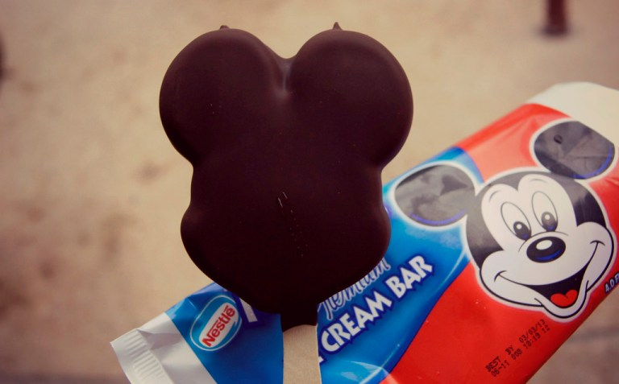
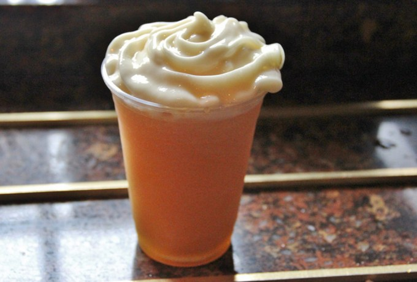
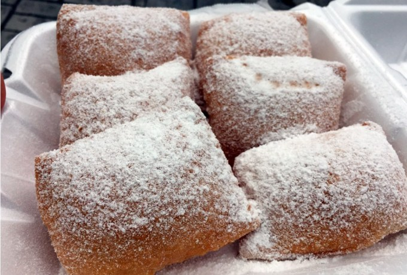
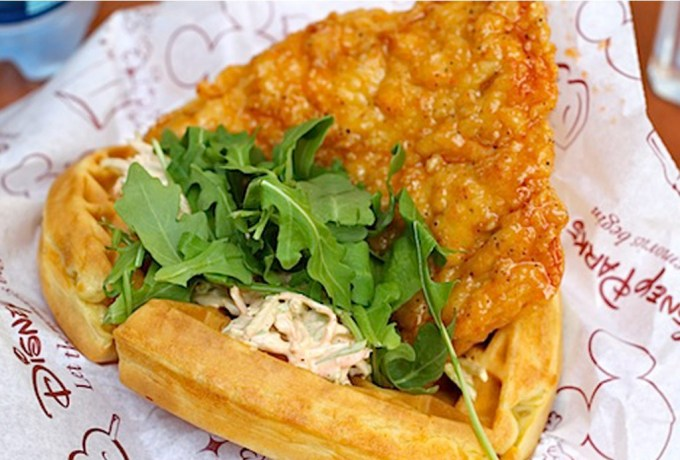

Platillos de parques Disney
| Ir a inicio |
| Ir a festivales |
| Ir a canciones |
| Ir a vestimenta |
| Ir a Formulario |
Existen muchos platillos en los parques disney, pero te contaré sobre los más iconicos o favoritos del público.
•Mickey Premium Bar: Esta paleta helada podrá no ser tan extravagante pero es un clásico en Disney. La encuentras casi por todo el parque en diferentes puestos.

• Lefou’s Brew:No fuiste a Disney si no probaste la tradicional cerveza de mantequilla. La encontrarás en Gaston’s Tavern en Magic Kingdom.

• Beignets: Si tu princesa favorita es Tiana de «La princesa y el Sapo» tienes que probar estos auténticos Beignets. Podrás probarlos en Disney’s Port Orleans French Quarter.

•Sweet and Spicy Chicken Waffle: Si te gusta la combinación de salado con dulce, este waffle es la mejor opción para ti. Solo es pollo envuelto en un waffle con queso. Sleepy Hollow en Magic Kingdom será donde podrás encontrarlo.
